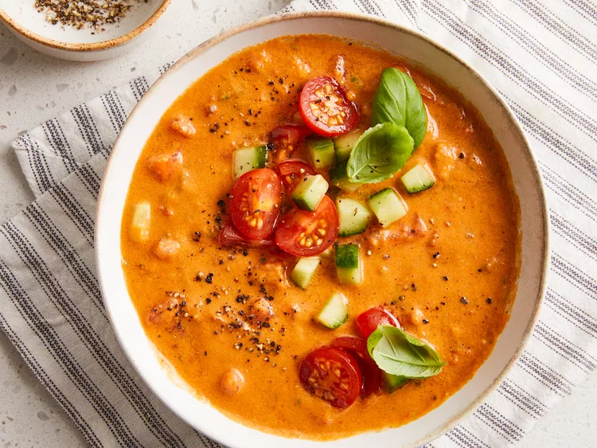
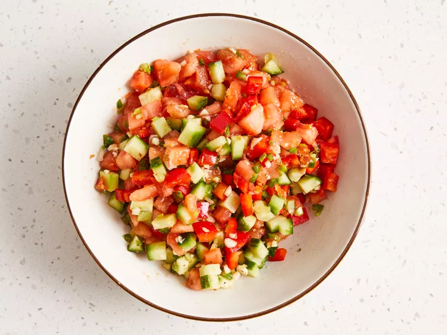
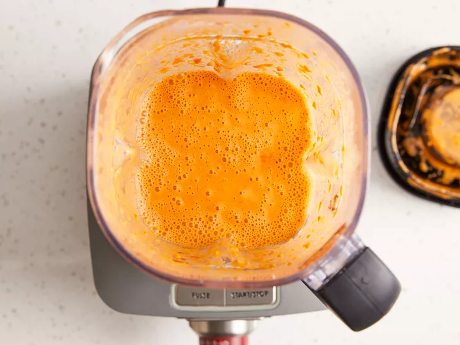
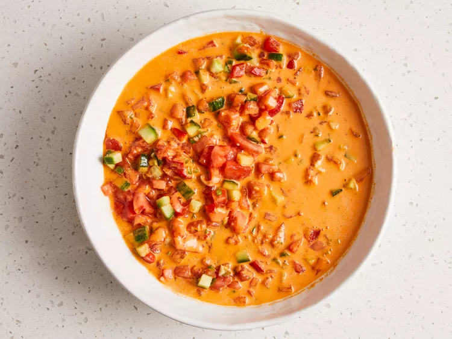
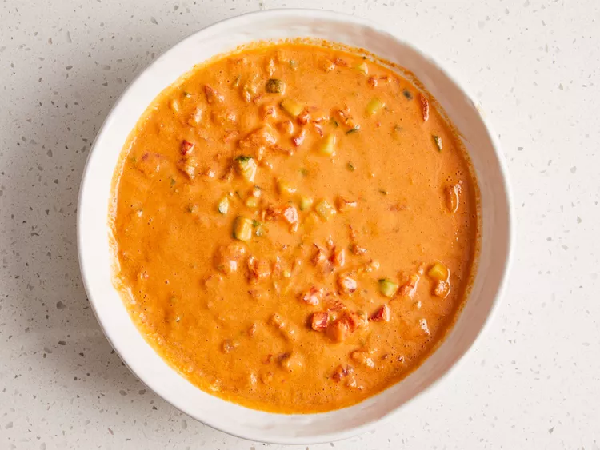

Back to All Recipe Page
Gazpacho

Description:
Gazpacho is a smooth, blended, cold soup made with fresh vegetables. Traditionally, tomatoes and cucumbers are heavily featured. The dish, which has Spanish and Portuguese origins, is a summer staple.
Ingredients:
- 4 large fresh tomatoes, peeled and diced
- ½ English cucumber, peeled and finely diced
- ½ cup finely diced red bell pepper
- ¼ cup minced green onion
- 1 large jalapeño pepper, seeded and minced
- 2 cloves garlic, minced
- 1 teaspoon salt
- ½ teaspoon ground cumin
- 1 pinch dried oregano
- 1 pinch cayenne pepper, or to taste
- freshly ground black pepper to taste
- 1 pint cherry tomatoes
- ¼ cup extra-virgin olive oil
- 1 lime, juiced
- 1 tablespoon balsamic vinegar
- 1 teaspoon Worcestershire sauce
- salt and ground black pepper to taste
- 2 tablespoons thinly sliced fresh basil
Directions:
- Step 1:Combine diced tomatoes, cucumber, bell pepper, green onion, jalapeño, and garlic in a large bowl. Stir in salt, cumin, oregano, cayenne pepper, and black pepper.

- Step 2: Place cherry tomatoes, olive oil, lime juice, balsamic vinegar, and Worcestershire sauce in a blender. Cover and purée until smooth.

- Step 3: Pour puréed mixture through a strainer into the tomato-cucumber mixture; stir to combine.

- Step 4: Place 1/3 of the tomato mixture into the blender. Cover, turn blender on, and purée until smooth. Return puréed mixture to the remaining tomato-cucumber mixture. Stir to combine. Cover and chill in the refrigerator for 2 hours.

- Step 5: Season cold soup with salt and black pepper to taste. Ladle into bowls and top with basil.

Credits: